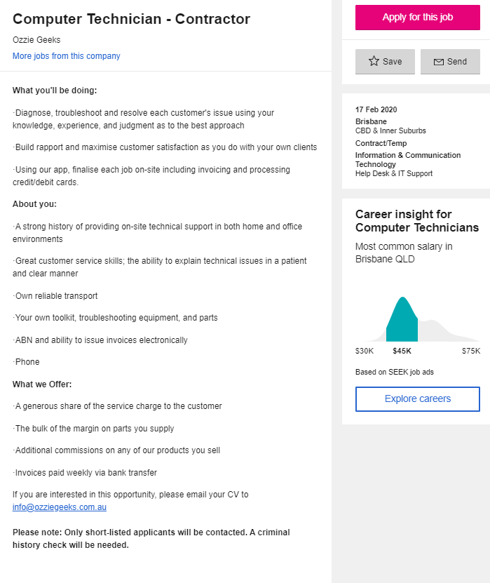

IIT 01 Assignment
My Ideal Job
The Position:
The job post This job posting is for a position as a repair technician for the company “Ozzie Geeks”. This is an at-home computer repair company that specialises in same day repair of computer systems in homes and businesses around Brisbane and Perth. This job is appealing to me as I like working with and repairing computers, so not only am I interested in the work, but I have prior knowledge.
Skills Required:
As stated on the application I must be able to diagnose, troubleshoot, and resolve a customer’s issue. To do this I imagine I’d need a sound grasp on the common issues and their solutions of the systems that this company repairs, which include but are not limited to HP, Microsoft, Apple, Samsung, etc.
My Skills:
I’m already fairly knowledgeable in working with and repairing windows systems from my years of hobby level computer building and repairing. I also have prior training in repairing systems on-site and communicating with the customer in person from my prior job at an AV company as a repair technician.
Increasing my knowledge:
To build upon the skills I already have I would like to learn more about servicing and repairing Apple devices. While the internals of their devices are relatively easy to deal with, it is my understanding that they make the devices harder to get into (aside from professional grade products such as the Mac Pro).
Personal Profiles:
Myers-Briggs Test:
Information about personality type.According to '16Personalities' I'm an INTP-A/INTP-T, meaning that I tend to think more logically than others might, but also have a bad habit of speaking my not yet fully developed thoughts aloud. When it comes to the effect my personality type could have on a team, I think it's generally a positive result. Whilst INTPs are often absent minded, they also excel at devoting themselves to something they are interested in, hence why I'm doing an IT course, becuase I'm interested in it. INTPs are also good at making impartial decisions, allowing for them to mediate in the event of a team argument.